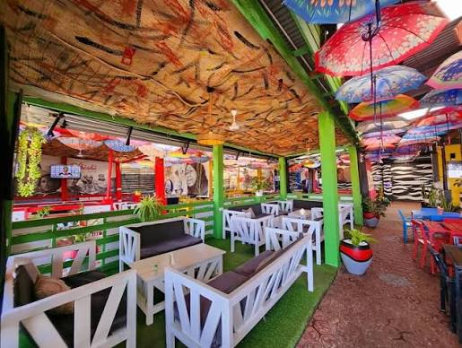

THE GARDEN. THE FOOD. THE PEOPLE.
A little Shishi.
A lot of heart.
“Kula Kujigalagaza.”
Colourful umbrellas overhead. A favourite spot on the bench. One big tray in the middle and everyone reaching for a little of everything.
That’s our kind of gathering. Familiar Tanzanian flavours, generous portions, and food made to bring people together. From the first spoon of pilau to the last piece of mishkaki, there’s always something worth sharing.
With love, Shishi.